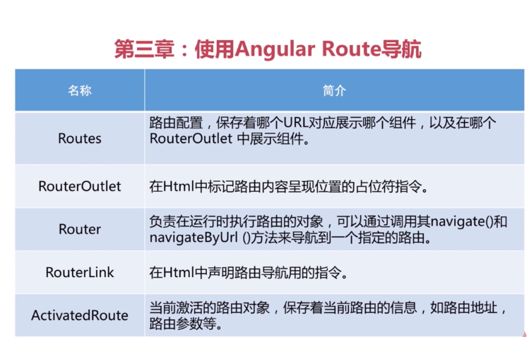
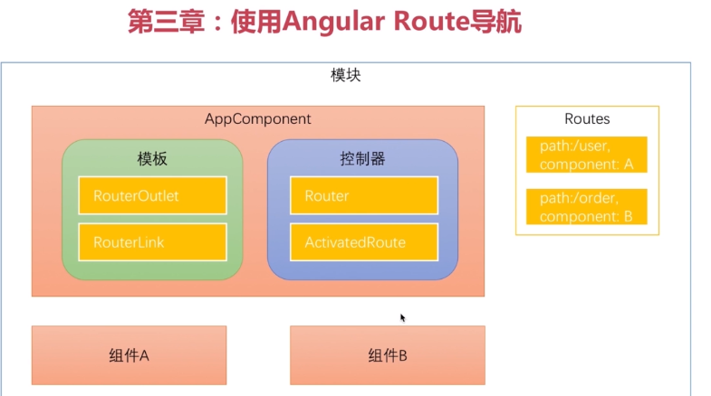
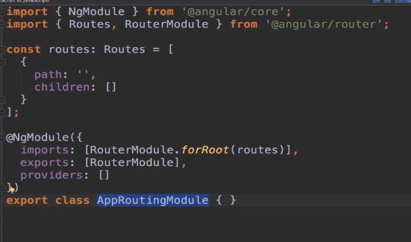
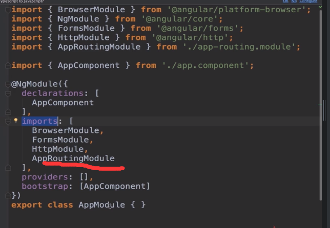
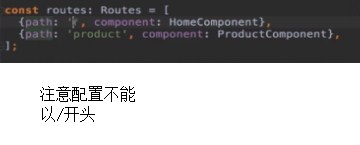
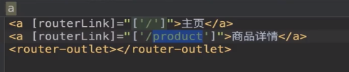
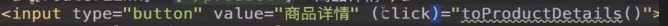
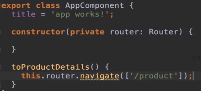
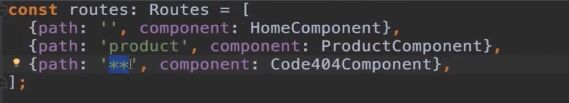

- Routes:路由配置
- RouterOutlet：模板占位符
- Router:服务，有个navigate()方法实现导航
- RouterLink:用在模板中的a标签内



注意配置不能以slash开头

routerLink为什么是个数组？因为，因为它不光接收路由路劲，还接受参数，a导航必须以
/或者./开头
- 以/开头会去主路由中找
- 以./开头会去子路由的配置中去找


一个是通过a链接跳过去的，一个是通过后台调用navigate方法实现的

通配符的路由一定要放在最后，因为angular是从前往后找的，如果在通配符之前没找到，就会显示404组件